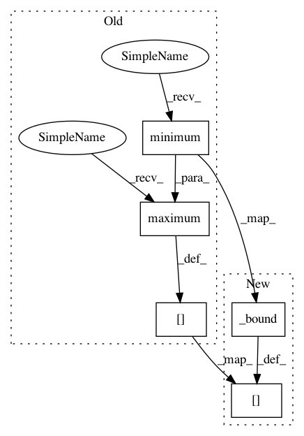

f474956bedad1fd4acf976da85b29d479242b367,mushroom/environments/inverted_pendulum.py,InvertedPendulum,step,#InvertedPendulum#Any#,74
Before Change
self._state = np.array(new_state[-1])
self._state[0] = normalize_angle(self._state[0])
self._state[1] = np.maximum(-self._max_omega,
np.minimum(self._state[1],
self._max_omega))
reward = np.cos(self._state[0])
self._last_u = u
After Change
self._state = np.array(new_state[-1])
self._state[0] = normalize_angle(self._state[0])
self._state[1] = self._bound(self._state[1],
-self._max_omega, self._max_omega)
reward = np.cos(self._state[0])
self._last_u = u
In pattern: SUPERPATTERN
Frequency: 3
Non-data size: 5
Instances
Project Name: AIRLab-POLIMI/mushroom
Commit Name: f474956bedad1fd4acf976da85b29d479242b367
Time: 2018-05-14
Author: boris.ilpossente@hotmail.it
File Name: mushroom/environments/inverted_pendulum.py
Class Name: InvertedPendulum
Method Name: step
Project Name: AIRLab-POLIMI/mushroom
Commit Name: f474956bedad1fd4acf976da85b29d479242b367
Time: 2018-05-14
Author: boris.ilpossente@hotmail.it
File Name: mushroom/environments/ship_steering.py
Class Name: ShipSteering
Method Name: step
Project Name: AIRLab-POLIMI/mushroom
Commit Name: f474956bedad1fd4acf976da85b29d479242b367
Time: 2018-05-14
Author: boris.ilpossente@hotmail.it
File Name: mushroom/environments/inverted_pendulum.py
Class Name: InvertedPendulum
Method Name: reset